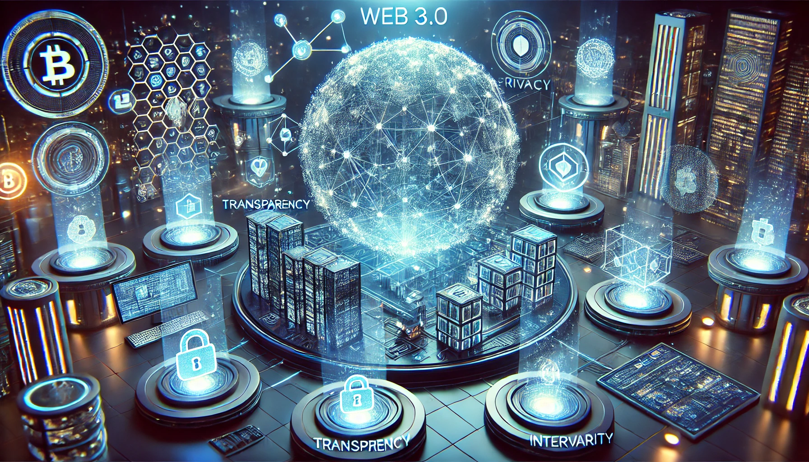
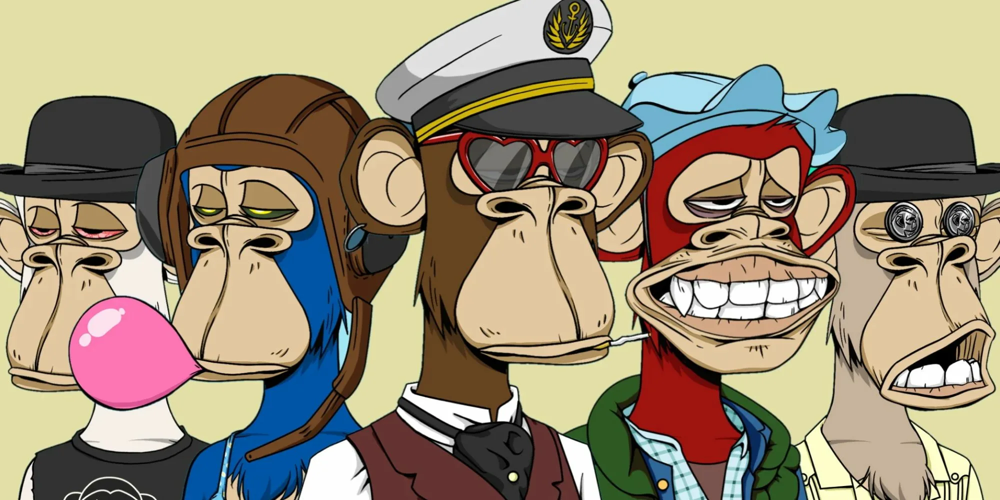
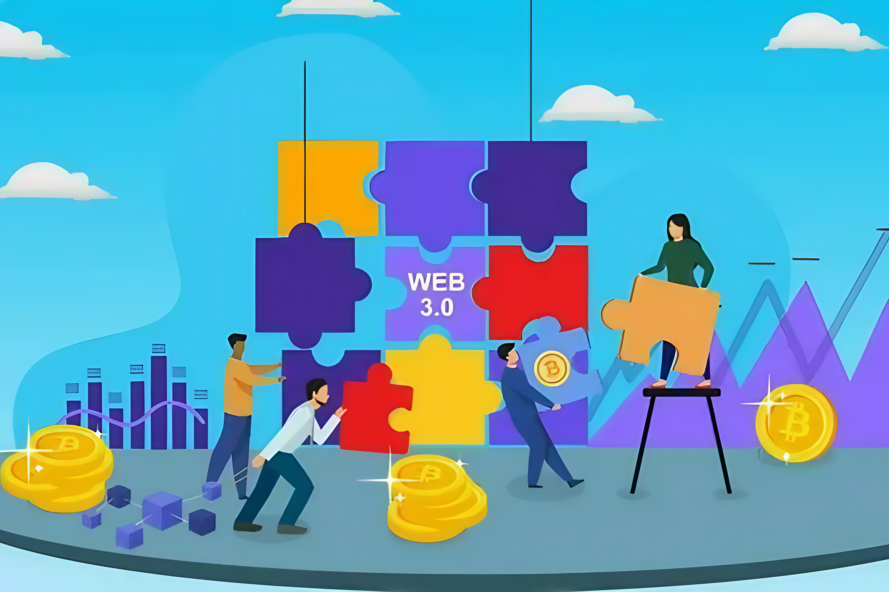
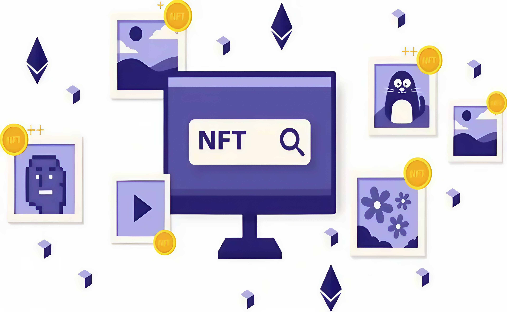
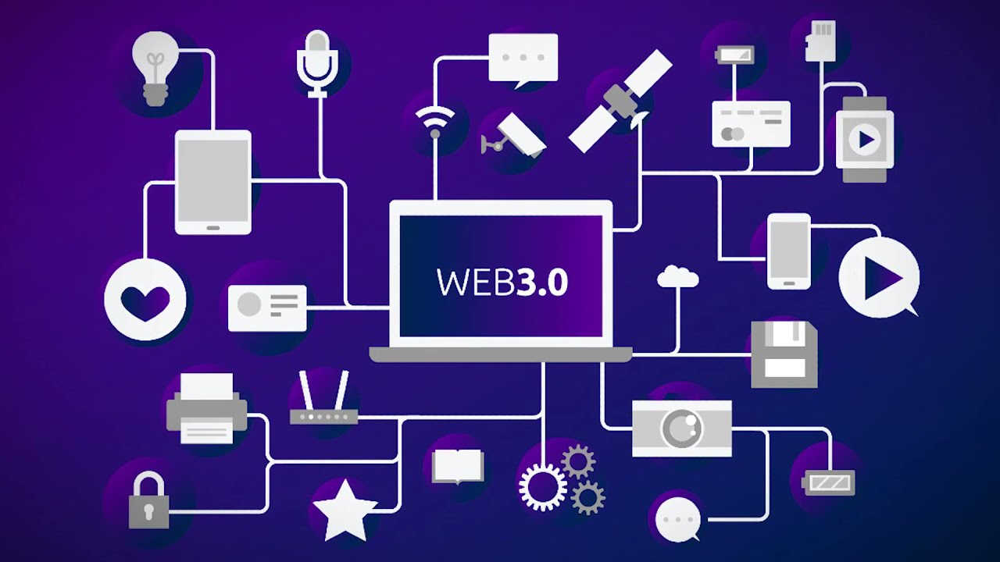

Содержание
- Введение
- Эволюция интернета: от Web 1.0 к Web 3.0
- Web 1.0: Первоначальный этап развития
- Web 2.0: Интернет взаимодействия
- Web 3.0: Новая парадигма
- Технологическая основа Web 3.0
- Принципы Web 3.0 и их значение для цифровой экосистемы
- Ключевые направления применения Web 3.0
- Влияние Web 3.0 на отрасли и общество
- Финансовый сектор: новая парадигма управления капиталом
- Образование: доступность знаний для каждого
- Здравоохранение: защита данных и повышение эффективности
- Искусство и культура: новые горизонты для творчества
- Логистика: прозрачность и автоматизация цепочек поставок
- Влияние на общество: новая этика цифрового взаимодействия
- Преимущества и вызовы Web 3.0
- Преимущества для пользователей
- Преимущества для бизнеса
- Преимущества для государства
- Глобальные преимущества
- Вызовы внедрения Web 3.0: барьеры на пути к цифровой революции
- Технические вызовы
- Регуляторные барьеры
- Экономические вызовы
- Социальные вызовы
- Экологические вызовы
- Перспективы развития Web 3.0
- Трансформация интернета
- Развитие искусственного интеллекта
- Метавселенные как новая форма взаимодействия
- Расширение использования NFT
- Влияние на социальные структуры
- Государственная интеграция
- Экологическая устойчивость
- Заключение
Введение
Интернет стал неотъемлемой частью современного мира, оказывая колоссальное влияние на различные аспекты жизни — от образования и бизнеса до культуры и коммуникаций. Он прошёл три ключевых этапа развития, каждый из которых трансформировал способы взаимодействия между людьми, компаниями и данными.
Первые шаги в цифровом пространстве были сделаны в эпоху Web 1.0, когда интернет служил лишь платформой для передачи информации. Пользователи играли роль пассивных наблюдателей, взаимодействуя со статичным контентом. Впоследствии, с приходом Web 2.0, интернет стал пространством творчества и обмена, открыв возможности для двусторонней коммуникации и создания сообществ.
Однако Web 2.0 принёс не только преимущества, но и вызовы. Централизация данных в руках крупных компаний привела к вопросам конфиденциальности, а монополизация ограничила свободу пользователей. Это послужило стимулом к разработке новой концепции — Web 3.0, которая ориентирована на децентрализацию, прозрачность и безопасность.
Web 3.0 обещает изменить не только техническую архитектуру интернета, но и социальные, экономические и политические отношения, став основой цифрового будущего. Эта статья посвящена изучению эволюции интернета, анализу его технологий, возможностей и вызовов, связанных с новой парадигмой.
Эволюция интернета: от Web 1.0 к Web 3.0
Интернет, одна из самых значимых технологических инноваций последних десятилетий, прошёл сложный путь развития. От первых статичных страниц до современных децентрализованных сетей, его история отражает эволюцию человеческого общества, технологий и методов взаимодействия. Сегодня на повестке дня Web 3.0 — концепция, способная трансформировать цифровое пространство.
Web 1.0: Первоначальный этап развития
Web 1.0, возникший в 1990-х годах, представлял собой статичную платформу для предоставления информации. Он функционировал как цифровая энциклопедия, где пользователи могли просматривать контент, но не влиять на его содержание. Основой Web 1.0 стали простые HTML-страницы, лишённые интерактивных элементов. Примерами таких сайтов служили ранние версии поисковых систем, такие как Yahoo и AltaVista.
Этот этап развития интернета был важным с точки зрения доступности информации. Впервые в истории человечества миллионы пользователей получили мгновенный доступ к данным из любой точки мира. Однако отсутствие интерактивности и персонализации ограничивало его потенциал.
Web 2.0: Интернет взаимодействия
На рубеже 2000-х годов интернет вступил в эпоху Web 2.0. Этот этап характеризовался переходом от пассивного потребления контента к активному взаимодействию. Пользователи начали участвовать в создании контента, благодаря чему появились социальные сети, блоги и платформы для обмена видео.
Основные достижения Web 2.0 включали двустороннее взаимодействие, развитие облачных технологий и массовую цифровизацию бизнеса. Компании, такие как F, Twitter и YouTube, стали центральными узлами цифровой экосистемы. В то же время появились проблемы: монополизация данных, снижение уровня конфиденциальности пользователей и концентрация власти в руках крупных платформ.
Web 3.0: Новая парадигма
Web 3.0 представляет собой качественно новый этап в развитии интернета. Основная идея этой концепции заключается в децентрализации данных, прозрачности операций и усилении конфиденциальности. Новые технологии, такие как блокчейн, смарт-контракты и искусственный интеллект, играют ключевую роль в формировании Web 3.0.
Этот этап развития интернета направлен на устранение ограничений, характерных для Web 2.0. Web 3.0 обещает вернуть контроль над данными пользователям, минимизировать влияние посредников и обеспечить устойчивость цифровых экосистем.

Технологическая основа Web 3.0
В основе концепции Web 3.0 лежат технологии, которые не просто обеспечивают функциональность, но и задают новое направление для всего цифрового пространства. Эти инструменты — блокчейн, смарт-контракты, искусственный интеллект, метавселенные и невзаимозаменяемые токены — стали той основой, на которой строится интернет будущего. Их взаимодействие обещает не только повысить безопасность и прозрачность, но и изменить наше представление о том, как должен работать интернет.
Ключевую роль в Web 3.0 играет блокчейн. Эта технология, появившаяся на рубеже 2010-х годов, представляет собой распределённый реестр, где все данные записываются в цепочку блоков. Каждая запись неизменна, а сама система лишена централизованного управляющего органа. В этом заложена её главная сила. Блокчейн обеспечивает прозрачность операций и устойчивость к сбоям, что делает его идеальной платформой для децентрализованных решений. Данные больше не хранятся на одном сервере, что минимизирует риск их утечек или манипуляций. Применение этой технологии выходит далеко за пределы финансов: от управления цепочками поставок до защиты медицинской информации. Она стала символом свободы от централизованного контроля.
Неразрывно связаны с блокчейном и смарт-контракты. Эти автоматические алгоритмы, работающие на основе заранее заданных условий, устраняют необходимость в посредниках. Представьте себе сделку, которая завершится только тогда, когда обе стороны выполнят свои обязательства. Это не просто удобство, но и гарантия честности. Смарт-контракты уже нашли применение в аренде недвижимости, управлении финансами и логистике, превращая сложные бюрократические процессы в прозрачные и оперативные.
Технологическая основа Web 3.0 невозможна без искусственного интеллекта. Именно он придаёт этой системе гибкость и интеллект, позволяя анализировать данные и подстраиваться под запросы пользователя. Искусственный интеллект делает интернет более человечным, предлагая персонализированные решения на основе предпочтений. Будь то поиск музыки, планирование маршрута или настройка интерфейса, ИИ обеспечивает удобство и точность. Но его значение выходит за рамки привычных сценариев. Он используется для анализа больших данных, управления децентрализованными организациями и разработки алгоритмов, которые могут адаптироваться к изменениям среды.
Особое место в экосистеме Web 3.0 занимают метавселенные. Эти цифровые пространства стирают грань между реальным и виртуальным миром, создавая новые формы взаимодействия. Метавселенные позволяют не только проводить время в играх или социальных сетях, но и работать, учиться, покупать виртуальную недвижимость и участвовать в экономических процессах. Здесь люди могут общаться с другими пользователями, участвовать в концертах, создавать свои миры и даже зарабатывать деньги. Виртуальная экономика, основанная на уникальных цифровых активах, становится одним из главных драйверов развития этой сферы.
Наконец, нельзя не упомянуть о невзаимозаменяемых токенах — NFT. Это уникальные цифровые объекты, которые подтверждают право собственности на определённый актив. В отличие от традиционных файлов, каждый токен неповторим. Художники, музыканты и разработчики используют эту технологию, чтобы монетизировать своё творчество, минуя посредников. NFT находят своё применение в искусстве, играх и даже виртуальной недвижимости, становясь инструментом, который открывает новые горизонты для креативной экономики.
Web 3.0 объединяет эти технологии в единую экосистему, где каждый элемент дополняет другой. Блокчейн обеспечивает основу для децентрализации, смарт-контракты делают процессы прозрачными и автоматизированными, искусственный интеллект подстраивает цифровую среду под потребности пользователя, метавселенные создают новые пространства для жизни, а NFT формируют экономику, где уникальность становится ценностью. Этот синтез открывает дверь в эпоху, где интернет становится более справедливым, безопасным и ориентированным на пользователя.

Принципы Web 3.0 и их значение для цифровой экосистемы
Web 3.0 представляет собой не только технологический прорыв, но и концептуальное переосмысление базовых принципов функционирования интернета. Это этап, где на первый план выходят ценности, ранее игнорируемые в гонке за массовостью и коммерческим успехом. Принципы Web 3.0 — децентрализация, прозрачность, приватность и интероперабельность — задают вектор развития для всей цифровой экосистемы. Вместо того чтобы просто улучшать существующую архитектуру, эти принципы создают её заново, стирая границы между пользователем и технологией.
Основу новой философии Web 3.0 составляет децентрализация. Если на предыдущих этапах развития интернета управление информацией сосредотачивалось в руках крупных корпораций, то в новой парадигме данные распределяются между пользователями. Децентрализация ликвидирует монополии и перераспределяет власть. Это не просто техническое новшество, но и философский подход, который меняет сами основы взаимодействия. В эпоху Web 2.0 гиганты, такие как Google, Facebook и Amazon, стали хранителями данных, превращая пользователей в источник извлечения выгоды. В Web 3.0 эти данные остаются под контролем самих пользователей.
Рассмотрим, как это работает на практике. Традиционные социальные сети владеют всей информацией, которую пользователи создают, и монетизируют её за счёт таргетированной рекламы. В децентрализованных системах, которые предлагает Web 3.0, каждый пользователь сам распоряжается своей цифровой идентичностью. Например, данные, которые ранее использовались для показа рекламы, могут быть предоставлены напрямую рекламодателям только с согласия владельца, а пользователь в свою очередь получает финансовую компенсацию за доступ к своим данным. Это радикально меняет баланс сил и экономическую модель взаимодействия.
Прозрачность является вторым краеугольным камнем новой экосистемы. Она достигается благодаря технологиям блокчейна, обеспечивающим неизменяемость записей и открытый доступ к транзакциям. Прозрачность особенно важна в вопросах, связанных с доверием: от голосования до финансовых операций. Например, в системе голосования, построенной на основе блокчейна, каждый избиратель может удостовериться, что его голос учтён, и при этом сохраняется анонимность. Это устраняет риск фальсификаций и укрепляет доверие между гражданами и государственными институтами.
Но прозрачность — это не только о механизмах учёта данных, но и о социальной ответственности. В Web 3.0 компании и организации обязаны быть максимально открытыми в том, как они используют данные и ресурсы. Блокчейн создаёт условия, при которых скрыть манипуляции становится практически невозможно. Финансовые компании могут открыто демонстрировать свои балансы, производители — отслеживать происхождение товаров, а потребители — принимать решения на основе достоверной информации.
Третий принцип Web 3.0, приватность, представляет собой ответ на вызовы предыдущих этапов развития интернета. В эпоху Web 2.0 приватность была часто принесена в жертву удобству. Пользователи соглашались делиться личной информацией ради бесплатного доступа к сервисам, не осознавая последствий. Утечки данных, слежка и навязчивая реклама стали побочным эффектом централизованной модели. Web 3.0 возвращает контроль над данными в руки пользователей.
Технология децентрализованной идентичности обеспечивает каждому человеку возможность самостоятельно управлять своей цифровой персоной. В этом подходе данные пользователя больше не хранятся на централизованных серверах, которые могут быть взломаны или использованы против его воли. Вместо этого они распределены в сети и доступны только тому, кто обладает ключом доступа. Представьте себе систему, где ваши медицинские данные видны только вашему врачу и недоступны даже государственным структурам без вашего разрешения. Это не просто удобство, а новый уровень безопасности.
Особое значение в Web 3.0 имеет интероперабельность. Это понятие охватывает возможность интеграции различных платформ и приложений в единую экосистему. В эпоху Web 2.0 каждое приложение существовало как отдельный мир: пользователь должен был создавать новый аккаунт, переносить данные и адаптироваться к разным интерфейсам. В Web 3.0 это уходит в прошлое. Данные пользователя становятся универсальными и могут использоваться на любых платформах.
Примером может служить цифровой кошелёк, который позволяет оплачивать услуги в любой точке мира, не завися от валютных барьеров или банковских систем. Такой подход упрощает взаимодействие и делает интернет более доступным и функциональным. Интероперабельность также способствует развитию метавселенных, где пользователи могут свободно перемещаться между различными виртуальными пространствами, сохраняя свои данные и имущество.
Эти принципы вместе формируют основу Web 3.0, но их значение выходит за рамки технологий. Они меняют сами способы взаимодействия людей, бизнеса и государственных структур. В новой цифровой экосистеме децентрализация усиливает независимость, прозрачность укрепляет доверие, приватность обеспечивает безопасность, а интероперабельность упрощает интеграцию.
Web 3.0 обещает не только улучшить то, что уже существует, но и создать новые формы взаимодействия. Это интернет, где власть над данными принадлежит пользователям, а не платформам, где доверие строится на алгоритмах, а не на посредниках, и где доступность технологий становится общей ценностью. Эти принципы закладывают основу для будущего, где цифровое пространство будет более открытым, справедливым и защищённым.
В следующей главе мы рассмотрим ключевые направления, в которых эти принципы находят своё практическое воплощение, и как они меняют традиционные подходы в различных отраслях.
Ключевые направления применения Web 3.0
Технологии Web 3.0 уже сегодня находят своё воплощение в разнообразных областях, формируя новые подходы к взаимодействию, обмену и управлению данными. Эти направления охватывают как повседневные цифровые практики, так и стратегические отрасли экономики, обеспечивая возможности для децентрализации, автоматизации и повышения прозрачности. В этой главе мы подробно рассмотрим, как принципы Web 3.0 трансформируют ключевые аспекты цифровой экосистемы.
Одним из центральных направлений Web 3.0 является децентрализация данных. В эпоху Web 2.0 данные пользователей собирались и обрабатывались крупными платформами, которые концентрировали в своих руках информацию о миллиардах людей. Эта модель оказалась не только уязвимой к утечкам, но и вызвала множество вопросов о конфиденциальности и монополизации данных. В Web 3.0 информация хранится в распределённых системах, таких как блокчейн или IPFS (InterPlanetary File System), где каждый пользователь остаётся владельцем своих данных.
Децентрализация данных предлагает уникальные возможности. Например, в социальной сети, построенной на принципах Web 3.0, каждый пользователь сам решает, как его данные могут быть использованы рекламодателями. Более того, он получает за это финансовое вознаграждение, создавая новую экономическую модель, основанную на личной собственности. Такой подход делает цифровое пространство более справедливым и защищённым, исключая случаи несанкционированного использования информации.
Другим важным направлением являются умные контракты. Эти алгоритмы, работающие на основе блокчейна, позволяют автоматизировать взаимодействие между сторонами. Умные контракты уже сегодня применяются в финансовых сделках, страховании, логистике и даже в сфере недвижимости. Например, с помощью умного контракта можно организовать процесс аренды жилья: деньги автоматически списываются с аккаунта арендатора, если условия договора соблюдены. Это исключает необходимость в посредниках, таких как банки или нотариусы, и делает процессы более прозрачными и оперативными.
Технология смарт-контрактов также трансформирует цепочки поставок. Компании могут использовать блокчейн для отслеживания движения товаров от производителя до конечного потребителя. Это особенно важно в таких отраслях, как фармацевтика или производство продуктов питания, где прозрачность и контроль качества имеют критическое значение.
Метавселенные, являющиеся ещё одним направлением Web 3.0, формируют новую цифровую реальность, в которой пользователи могут взаимодействовать, работать и отдыхать в виртуальных пространствах. Эти пространства становятся полноценной частью экономики, предлагая возможности для покупки и продажи цифровой недвижимости, организации мероприятий и создания уникального контента. Метавселенные уже находят применение в образовании, где виртуальные классы позволяют студентам посещать лекции, не покидая своего дома, или в бизнесе, где компании проводят конференции в цифровых офисах.
Экономическая система метавселенных базируется на использовании невзаимозаменяемых токенов (NFT), которые подтверждают право собственности на уникальные цифровые активы. Например, в метавселенной Decentraland пользователи могут приобретать участки виртуальной земли, создавая свои пространства для коммерческих или творческих целей. NFT находят своё применение и в искусстве. Цифровые произведения художников становятся уникальными активами, которые можно продавать или передавать, что открывает новые возможности для креативной экономики.
Существенную роль в развитии Web 3.0 играет искусственный интеллект. Эта технология усиливает интеллектуальные возможности интернета, делая его более персонализированным и адаптируемым. Искусственный интеллект анализирует данные пользователей, чтобы предложить решения, максимально соответствующие их интересам. В децентрализованных финансовых платформах ИИ помогает оценивать риски и управлять активами, а в образовательных системах — подбирать учебные материалы в соответствии с потребностями каждого учащегося.
Примером применения ИИ в Web 3.0 является создание интеллектуальных помощников, которые работают на основе децентрализованных платформ. Эти системы способны не только отвечать на запросы, но и выполнять сложные задачи, такие как планирование маршрутов, анализ больших данных или даже участие в принятии управленческих решений в децентрализованных автономных организациях (DAO).
DAO, в свою очередь, представляют собой ещё одно ключевое направление Web 3.0. Эти организации управляются коллективно, без централизованного руководства, благодаря механизмам голосования и смарт-контрактам. DAO находят применение в самых разных областях: от инвестиционных фондов до управления сообществами разработчиков. Они обеспечивают максимальную прозрачность и демократичность, устраняя коррупционные риски и повышая доверие внутри сообществ.
Web 3.0 также меняет подход к цифровой идентичности. В традиционном интернете пользователи вынуждены регистрироваться на множестве платформ, оставляя свои данные в различных системах. Это не только неудобно, но и создаёт риски для конфиденциальности. В Web 3.0 используется концепция децентрализованной идентичности, где пользователь сохраняет все данные о себе в блокчейне и самостоятельно контролирует доступ к ним. Это позволяет избавиться от необходимости создавать множество аккаунтов и минимизирует вероятность утечек информации.
Ключевые направления применения Web 3.0 не только расширяют возможности пользователей, но и формируют новые подходы к бизнесу, экономике и социальным взаимодействиям. Они стирают границы между реальным и виртуальным, создают условия для демократизации данных и внедряют механизмы, которые делают интернет безопаснее и справедливее.
Влияние Web 3.0 на отрасли и общество
Web 3.0 представляет собой не только технологическую трансформацию, но и мощный инструмент, способный переосмыслить основные отрасли экономики и общественные процессы. От финансового сектора до образования и здравоохранения — его принципы децентрализации, прозрачности и приватности оказывают влияние на ключевые аспекты нашей жизни.
Финансовый сектор: новая парадигма управления капиталом
Одной из наиболее ощутимых сфер влияния Web 3.0 стали финансы. Децентрализованные финансовые системы, известные как DeFi, предоставляют пользователям возможность проводить операции без посредников, таких как банки или платёжные системы. В этой новой экосистеме транзакции выполняются с помощью смарт-контрактов, что делает их быстрее, дешевле и прозрачнее.
Примером может служить платформа Ethereum, которая позволяет пользователям брать кредиты, инвестировать и совершать сделки, минуя традиционные финансовые институты. В таких системах управление капиталом становится доступным для каждого, независимо от географического положения или уровня дохода. Более того, криптовалюты, лежащие в основе DeFi, становятся не только средством обмена, но и инструментом для создания новых экономических моделей.
Эти изменения также касаются международной торговли. Традиционные банковские переводы занимают дни и связаны с высокими комиссиями, тогда как блокчейн позволяет проводить мгновенные и недорогие транзакции. В будущем это может способствовать значительному увеличению глобального экономического сотрудничества, устраняя барьеры, которые долгое время сдерживали развитие международных рынков.
Образование: доступность знаний для каждого
Web 3.0 способен радикально изменить сферу образования, сделав его более доступным и персонализированным. Виртуальные классы и образовательные платформы, основанные на принципах децентрализации, предлагают студентам возможность учиться из любой точки мира, сохраняя при этом полный контроль над своими данными.
В метавселенных, созданных на основе технологий Web 3.0, можно создавать интерактивные учебные пространства, где студенты могут не только слушать лекции, но и активно участвовать в образовательном процессе. Эти виртуальные кампусы обеспечивают доступ к лучшим преподавателям и методикам обучения, независимо от географии.
Кроме того, децентрализованные системы сертификации позволяют избежать подделки дипломов и гарантируют их подлинность. Каждая выданная квалификация записывается в блокчейн, где она остаётся неизменной и доступной для проверки. Это создаёт новые возможности для работодателей, которые могут быть уверены в уровне знаний своих кандидатов.
Здравоохранение: защита данных и повышение эффективности
Web 3.0 предлагает революционные решения для здравоохранения, особенно в части управления данными пациентов. Сегодня медицинская информация часто хранится в централизованных системах, что делает её уязвимой для хакерских атак и недобросовестного использования. В новой экосистеме данные пациентов могут храниться в распределённых сетях, где доступ к ним будет возможен только с согласия владельца.
Такой подход не только повышает уровень конфиденциальности, но и делает медицинскую информацию доступной для врачей в любой точке мира. Например, пациент может предоставить временный доступ к своей истории болезни врачу в другом городе или стране, что упрощает диагностику и лечение.
Кроме того, Web 3.0 способствует развитию телемедицины. Использование смарт-контрактов позволяет автоматизировать процесс оплаты медицинских услуг, а блокчейн обеспечивает прозрачность операций. Это особенно важно для страховых компаний, которым необходимо учитывать множество факторов при выплатах.
Искусство и культура: новые горизонты для творчества
С появлением Web 3.0 художники, музыканты и другие представители творческих профессий получили возможность монетизировать своё творчество без посредников. NFT стали одним из главных инструментов этого процесса, позволяя создавать и продавать уникальные цифровые произведения.
Например, художники могут продавать свои работы в виде NFT, которые подтверждают право собственности на произведение. Каждый токен содержит данные о его создателе, владельце и истории продаж, что делает невозможным подделку или нарушение авторских прав. Это открывает доступ к глобальной аудитории и значительно расширяет возможности для заработка.
Кроме того, Web 3.0 создаёт условия для развития культурных проектов, объединяющих людей со всего мира. Метавселенные становятся платформой для проведения концертов, выставок и театральных постановок, позволяя зрителям участвовать в событиях, не выходя из дома. Это не только упрощает доступ к искусству, но и стимулирует создание новых форм взаимодействия.
Логистика: прозрачность и автоматизация цепочек поставок
В сфере логистики Web 3.0 предлагает решения, которые повышают прозрачность и эффективность цепочек поставок. Блокчейн позволяет отслеживать движение товаров на каждом этапе — от производителя до конечного потребителя. Это особенно важно для таких отраслей, как фармацевтика, где необходимо гарантировать качество и подлинность продукции.
Использование смарт-контрактов автоматизирует многие процессы, связанные с поставками. Например, система может автоматически списывать оплату с покупателя, как только товар доставлен в пункт назначения. Это исключает необходимость в ручной обработке данных и снижает риск ошибок.
Кроме того, децентрализация снижает зависимость от крупных логистических компаний, предоставляя мелким производителям возможность напрямую взаимодействовать с потребителями. Это способствует развитию локальных рынков и увеличению конкурентоспособности.
Влияние на общество: новая этика цифрового взаимодействия
Web 3.0 меняет не только отрасли, но и общественные отношения. Его децентрализованная природа способствует демократизации данных и повышению уровня доверия между людьми. В новой экосистеме каждый пользователь становится не просто потребителем, но и активным участником цифрового пространства.
Прозрачность операций укрепляет доверие между гражданами и государственными структурами. Например, внедрение блокчейна в избирательные системы позволяет избежать фальсификаций и гарантировать честность выборов. Это делает процессы управления более открытыми и справедливыми.
Влияние Web 3.0 также проявляется в борьбе за права человека и свободу слова. Децентрализация делает невозможным блокировку контента или манипуляцию информацией, что особенно важно для стран с авторитарными режимами. Это создаёт условия для свободного обмена идеями и укрепления гражданского общества.
Влияние Web 3.0 на отрасли и общество выходит далеко за рамки технических изменений. Он формирует новую цифровую реальность, где технологии работают на благо человека, обеспечивая прозрачность, безопасность и доступность. Следующей главой мы рассмотрим преимущества и вызовы, с которыми сталкивается внедрение Web 3.0.
Преимущества и вызовы Web 3.0
Web 3.0 обещает не только революцию в технологии, но и радикальные изменения в способах взаимодействия между людьми, организациями и государствами. Его принципы децентрализации, прозрачности и приватности обеспечивают уникальные преимущества для всех участников цифровой экосистемы. Однако наряду с этим новая парадигма сталкивается с рядом серьёзных вызовов, от технических ограничений до законодательных барьеров. Рассмотрим, каковы преимущества Web 3.0 и какие препятствия стоят на пути его реализации.
Преимущества для пользователей
Одним из главных достижений Web 3.0 становится возвращение контроля над данными в руки пользователей. В эпоху Web 2.0 данные собирались и использовались без ведома владельцев, создавая угрозы конфиденциальности и безопасности. Web 3.0 меняет эту модель, предоставляя каждому пользователю возможность решать, как и кем его информация может быть использована.
Например, пользователь может делиться своими данными с рекламодателями на условиях полной прозрачности, получая взамен вознаграждение. Это делает интернет не только средством потребления, но и источником дохода. Кроме того, благодаря технологии блокчейна, данные шифруются и хранятся в распределённой системе, что практически исключает возможность их утечек.
Прозрачность также играет ключевую роль. В новой цифровой экосистеме каждый пользователь может проверить, как используются его данные или как функционирует та или иная платформа. Например, системы голосования на основе блокчейна гарантируют, что голос каждого участника будет учтён, устраняя риски фальсификаций.
Преимущества для бизнеса
Для бизнеса Web 3.0 открывает новые горизонты. Во-первых, децентрализация позволяет снизить затраты на посредников. Компании могут взаимодействовать с клиентами напрямую, без участия банков, маркетинговых агентств и других посредников. Это не только уменьшает издержки, но и ускоряет процессы, делая их более эффективными.
Например, традиционная модель электронной коммерции предполагает уплату комиссий крупным платформам, таким как Amazon. В Web 3.0 сделки могут осуществляться через блокчейн, что исключает необходимость в таких комиссиях. Более того, децентрализованные платформы дают бизнесу возможность выходить на глобальные рынки, преодолевая барьеры, связанные с валютными ограничениями и местным законодательством.
Прозрачность и неизменяемость данных, обеспечиваемые блокчейном, также повышают уровень доверия между бизнесом и клиентами. Например, производители могут использовать блокчейн для отслеживания происхождения товаров, что особенно актуально в таких отраслях, как мода или продовольствие. Это помогает компаниям завоевать доверие клиентов и избежать обвинений в использовании неэтичных методов производства.
Преимущества для государства
Web 3.0 предоставляет уникальные возможности для повышения эффективности и прозрачности работы государственных структур. Одним из ключевых направлений является автоматизация услуг с помощью смарт-контрактов. Например, процесс выдачи документов, таких как паспорта или лицензии, может быть полностью автоматизирован, что значительно ускоряет и упрощает взаимодействие между гражданами и государством.
Прозрачность, обеспечиваемая блокчейном, играет важную роль в борьбе с коррупцией. Например, государственные тендеры, проведённые через блокчейн, позволяют всем участникам видеть, как распределяются средства, что минимизирует возможности для злоупотреблений.
Web 3.0 также может значительно улучшить управление данными граждан. В децентрализованной системе информация хранится безопасно и доступна только с согласия владельца, что исключает случаи её несанкционированного использования.
Глобальные преимущества
На глобальном уровне Web 3.0 способствует инклюзивности, предоставляя доступ к цифровой экономике большему числу людей, независимо от их местоположения или финансового состояния. Например, децентрализованные финансовые платформы (DeFi) предоставляют возможность получения кредитов даже тем, у кого нет банковского счёта.
Децентрализация также делает системы более устойчивыми к цензуре. Это особенно важно в условиях, когда доступ к информации ограничивается из-за политических или экономических причин. В Web 3.0 контент и приложения невозможно заблокировать, поскольку они хранятся в распределённых сетях.
Наконец, открытая и децентрализованная природа Web 3.0 стимулирует инновации. Разработчики получают возможность создавать новые продукты и сервисы без ограничений, которые налагают централизованные платформы.
Вызовы внедрения Web 3.0: барьеры на пути к цифровой революции
Web 3.0 обещает революцию в цифровой экосистеме, но его внедрение сопряжено с множеством вызовов. Они касаются как технологических, так и экономических, социальных и регуляторных аспектов. Чтобы Web 3.0 смог реализовать свой потенциал, необходимо решить целый ряд проблем, которые сегодня сдерживают его развитие.
Технические вызовы
На техническом уровне главной проблемой остаётся высокая сложность реализации децентрализованных систем. Технологии блокчейна, которые лежат в основе Web 3.0, требуют значительных вычислительных мощностей. Это становится барьером для масштабирования сетей. Например, сеть Ethereum, несмотря на свою популярность, до недавнего времени могла обрабатывать лишь около 15 транзакций в секунду. Это несравнимо с централизованными системами, такими как Visa, которые обрабатывают десятки тысяч операций за то же время.
Решения, такие как переход на более энергоэффективные механизмы консенсуса, например Proof-of-Stake, а также разработка технологий второго уровня, таких как Lightning Network, уже разрабатываются, но их массовое внедрение требует времени и ресурсов.
Другой технический вызов связан с безопасностью. Децентрализация, несмотря на все её преимущества, повышает сложность защиты данных. Каждая уязвимость в системе может быть использована злоумышленниками, а случаи кражи криптовалюты через взломы децентрализованных платформ показывают, что защита остаётся ключевой задачей.
Наконец, существует проблема совместимости различных блокчейн-систем. Сегодня платформы работают по-разному, что затрудняет их взаимодействие. Разработка протоколов для кросс-чейн взаимодействия, таких как Polkadot и Cosmos, может решить эту проблему, но пока эти технологии находятся на стадии активного развития.
Регуляторные барьеры
Web 3.0 сталкивается с неоднозначным отношением со стороны регулирующих органов. Во многих странах криптовалюты и связанные с ними технологии остаются под жёстким контролем или даже запрещены. Например, Китай полностью запретил майнинг и использование криптовалют, ссылаясь на их высокое энергопотребление и риск финансовой нестабильности.
Отсутствие единых стандартов регулирования создаёт неопределённость для разработчиков и инвесторов. Криптовалютные проекты вынуждены адаптироваться к различным законодательным условиям, что замедляет их развитие. Кроме того, государства опасаются потери контроля над финансовыми потоками, что делает их осторожными в вопросах легализации Web 3.0.
Ещё одним регуляторным вызовом является налогообложение. Использование децентрализованных финансов затрудняет мониторинг доходов, а отсутствие прозрачных правил налогового учёта вызывает опасения у властей. Это ограничивает развитие DeFi и делает крупные компании более осторожными в интеграции таких технологий.
Экономические вызовы
Web 3.0 требует значительных инвестиций для разработки и внедрения. Малый и средний бизнес сталкивается с финансовыми барьерами, которые мешают им интегрировать новые технологии. Например, создание децентрализованных приложений (dApps) или внедрение блокчейна требует найма квалифицированных специалистов, что увеличивает расходы.
Кроме того, распределённая природа Web 3.0 предполагает использование высококачественной инфраструктуры: от мощных серверов до стабильного интернета. В развивающихся странах, где доступ к таким ресурсам ограничен, внедрение Web 3.0 становится особенно сложным. Это усиливает цифровой разрыв между богатыми и бедными регионами, что противоречит самому духу новой технологии.
Социальные вызовы
Одним из самых сложных социальных вызовов Web 3.0 является низкий уровень осведомлённости пользователей. Несмотря на бурное развитие блокчейна, смарт-контрактов и NFT, большинство людей остаются далекими от понимания этих концепций. Это замедляет адаптацию технологий, а также делает пользователей уязвимыми перед мошенничеством.
Необходимо создавать образовательные программы, которые помогут людям понять преимущества Web 3.0 и научат безопасно использовать его возможности. Также важную роль играют интуитивно понятные интерфейсы, которые упрощают взаимодействие с децентрализованными платформами.
Кроме того, недоверие к децентрализации остаётся серьёзной проблемой. Пользователи привыкли к централизованным системам, таким как банки и социальные сети, и воспринимают их как надёжные структуры. Преодоление этого барьера требует не только технических решений, но и времени, чтобы люди смогли осознать преимущества новой модели.
Экологические вызовы
Экологическая устойчивость является ещё одним важным аспектом. Традиционные блокчейн-сети, такие как Bitcoin, используют энергозатратные механизмы консенсуса, что вызывает критику со стороны защитников окружающей среды. Например, на майнинг Bitcoin тратится больше энергии, чем потребляет целая страна, такая как Аргентина.
Для решения этой проблемы необходимо внедрение более энергоэффективных технологий, таких как Proof-of-Stake. Некоторые проекты, включая Ethereum, уже переходят на эту модель, но процесс требует времени и ресурсов.
Кроме того, Web 3.0 может быть использован для реализации экологических инициатив. Например, децентрализованные платформы могут отслеживать выбросы углекислого газа или управлять проектами восстановления лесов. Это создаёт возможности для интеграции экологических задач в цифровую экономику, но требует целенаправленных усилий.
Перспективы развития Web 3.0
Web 3.0, находящийся сегодня в стадии активного развития, обладает потенциалом, способным кардинально изменить интернет, экономику и общество. Его ключевые принципы, такие как децентрализация, приватность и прозрачность, уже начинают формировать новые подходы к взаимодействию людей, организаций и данных. Однако для полной реализации этих идей предстоит преодолеть множество препятствий, найти баланс между инновациями и необходимостью регулирования, а также определить, как эти технологии изменят наше будущее.
Трансформация интернета
Основное направление развития Web 3.0 связано с переходом на новые интернет-протоколы, которые позволят интегрировать децентрализацию, безопасность и высокую производительность. Одной из перспективных технологий является InterPlanetary File System (IPFS), которая заменяет традиционные централизованные системы хранения данных. Этот протокол позволяет создавать устойчивую сеть, где данные распределяются между множеством узлов, что повышает её надёжность и доступность.
Новые протоколы также поддерживают интероперабельность между блокчейнами, что устраняет барьеры, связанные с несовместимостью различных платформ. Это открывает дорогу к созданию единой цифровой экосистемы, где данные и приложения могут беспрепятственно взаимодействовать, обеспечивая пользователям комфорт и удобство.
Развитие искусственного интеллекта
Искусственный интеллект в контексте Web 3.0 станет ещё более мощным инструментом, который обеспечит интеллектуальное взаимодействие между пользователями и цифровыми платформами. Системы на основе ИИ смогут не только анализировать предпочтения и поведение, но и активно адаптироваться к изменяющимся условиям.
Например, виртуальные помощники, работающие на принципах децентрализации, будут интегрироваться в повседневные задачи пользователей: от управления финансами до планирования времени. Они смогут анализировать данные с учётом полной конфиденциальности, предоставляя рекомендации, основанные на потребностях каждого человека.
Кроме того, ИИ будет активно использоваться для повышения эффективности децентрализованных автономных организаций (DAO). Например, алгоритмы смогут прогнозировать результаты голосований, оптимизировать использование ресурсов и минимизировать риски. Это сделает управление в DAO более эффективным и справедливым.
Метавселенные как новая форма взаимодействия
Метавселенные станут одним из главных направлений развития Web 3.0. Они предложат пользователям совершенно новый способ взаимодействия с цифровым пространством, стирая границы между реальным и виртуальным. Эти платформы уже сегодня используют такие технологии, как виртуальная и дополненная реальность, создавая уникальные пространства для работы, обучения и отдыха.
Виртуальная экономика метавселенных будет продолжать развиваться, предлагая новые бизнес-модели. Пользователи смогут не только создавать цифровые активы, такие как одежда для аватаров или виртуальная недвижимость, но и зарабатывать на их продаже. Например, в метавселенной Decentraland уже сегодня продаются участки виртуальной земли за миллионы долларов.
Развитие метавселенных также приведёт к появлению новых профессий, связанных с разработкой, управлением и монетизацией цифровых миров. Это создаёт новые возможности для трудоустройства и роста экономики.
Расширение использования NFT
NFT, которые уже зарекомендовали себя как инструмент для управления цифровыми активами, продолжат играть важную роль в экосистеме Web 3.0. Эти токены будут использоваться не только в искусстве и играх, но и в других отраслях. Например, бренды смогут предлагать эксклюзивные продукты или услуги в виде NFT, которые будут предоставлять доступ к уникальным событиям или ресурсам.
Кроме того, развитие вторичных рынков для торговли NFT сделает их ещё более доступными. Пользователи смогут свободно обменивать свои токены, создавая динамичную экономику, где уникальность становится ключевым активом.
Влияние на социальные структуры
Web 3.0 создаёт условия для демократизации технологий, предоставляя равный доступ к инструментам и ресурсам. Это особенно важно для развивающихся стран, где доступ к традиционным финансовым и образовательным системам часто ограничен.
Например, децентрализованные платформы образования смогут предоставлять качественные учебные материалы и сертификацию, доступные любому человеку, независимо от его места проживания. Аналогично, DeFi открывает доступ к кредитам и инвестициям для миллионов людей, которые ранее не могли воспользоваться традиционными банковскими услугами.
Эти изменения способствуют сокращению цифрового разрыва и создают условия для более равноправного мира.
Государственная интеграция
Государства также начнут активно использовать технологии Web 3.0 для оптимизации своих процессов. Одной из ключевых сфер станет внедрение децентрализованных систем управления данными граждан. Например, создание цифровой идентичности на основе блокчейна позволит упростить процессы взаимодействия с государственными органами, такие как получение документов или участие в выборах.
Кроме того, технологии Web 3.0 могут быть использованы для повышения прозрачности управления. Государственные тендеры, проводимые через блокчейн, обеспечат честность распределения ресурсов, а автоматизация процессов на основе смарт-контрактов сократит бюрократические издержки.
Экологическая устойчивость
Web 3.0 способен внести значительный вклад в решение экологических проблем. Переход на более энергоэффективные модели консенсуса, такие как Proof-of-Stake, снижает углеродный след технологий блокчейна. Это делает их более экологически устойчивыми и адаптированными к требованиям времени.
Кроме того, децентрализованные платформы могут использоваться для управления экологическими проектами, такими как восстановление лесов или мониторинг выбросов углекислого газа. Эти инициативы помогут интегрировать экологические задачи в глобальную цифровую экосистему.
Заключение
Web 3.0 — это не просто очередной этап в эволюции интернета, а мощный инструмент для создания нового цифрового мира. Его принципы децентрализации, прозрачности, приватности и интероперабельности открывают беспрецедентные возможности для пользователей, бизнеса, государства и общества в целом. Этот этап эволюции интернета не только устраняет ограничения и проблемы, характерные для предыдущих поколений, но и задаёт новые стандарты цифрового взаимодействия.
Главным уроком, который можно извлечь из развития Web 3.0, является необходимость возврата контроля над данными пользователям. На протяжении десятилетий пользователи оставались лишь пассивными участниками цифрового пространства, в то время как крупные компании извлекали выгоду из их данных. Web 3.0 стремится изменить эту ситуацию, предоставляя каждому человеку возможность управлять своей цифровой жизнью. Это делает интернет более справедливым и демократичным, обеспечивая равные условия для всех участников.
Технологии Web 3.0 не просто повышают удобство использования интернета, но и способствуют его безопасности и устойчивости. Децентрализация исключает монополизацию и повышает надёжность систем, что делает их более устойчивыми к внешним угрозам. Блокчейн обеспечивает прозрачность, создавая условия для формирования доверия между участниками цифровой экосистемы. Смарт-контракты упрощают взаимодействие, исключая посредников и снижая издержки.
Особое значение Web 3.0 приобретает для развивающихся стран и групп населения, которые до этого времени оставались за пределами глобальной цифровой экономики. Децентрализованные платформы делают доступ к финансовым, образовательным и другим услугам возможным для миллионов людей, ранее не имевших таких возможностей. Это не только способствует сокращению цифрового разрыва, но и создаёт условия для более равноправного мира.
Влияние Web 3.0 выходит далеко за пределы технологий. Оно затрагивает фундаментальные аспекты общества, включая экономические модели, социальные структуры и политические системы. Например, децентрализованные автономные организации (DAO) предлагают новую модель управления, основанную на коллективной ответственности и прозрачности. Это позволяет создавать сообщества, где решения принимаются совместно, а возможности для злоупотреблений сведены к минимуму.
Однако успех Web 3.0 будет зависеть от способности человечества преодолеть вызовы, связанные с его внедрением. Технические барьеры, регуляторные ограничения и низкая осведомлённость пользователей остаются серьёзными препятствиями на пути к созданию полноценной экосистемы Web 3.0. Для их преодоления потребуется не только развитие технологий, но и координация усилий между государствами, бизнесом и обществом.
Web 3.0 предлагает уникальную возможность переосмыслить отношения между человеком и технологиями. Это шанс сделать интернет более гуманным, ориентированным на пользователя и способным решать глобальные проблемы. Однако для того чтобы эта возможность стала реальностью, необходимы не только технические инновации, но и ответственность со стороны всех участников цифровой экосистемы.
Будущее интернета определяется уже сейчас. Вопрос в том, как мы используем потенциал Web 3.0: для создания справедливого цифрового пространства или для усиления уже существующих проблем. Этот выбор лежит на каждом из нас, и от него зависит, каким будет мир завтрашнего дня.